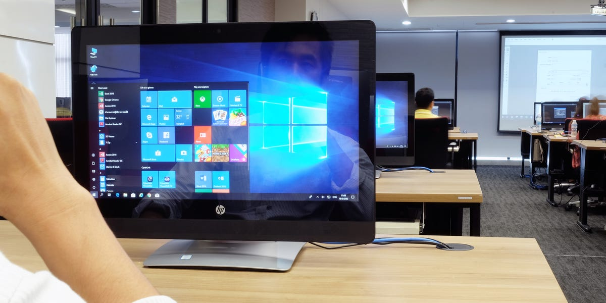
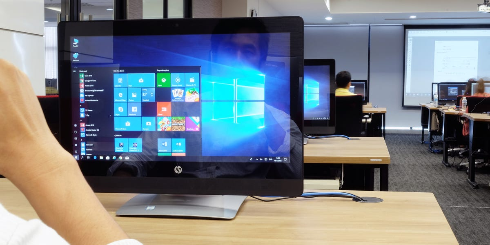
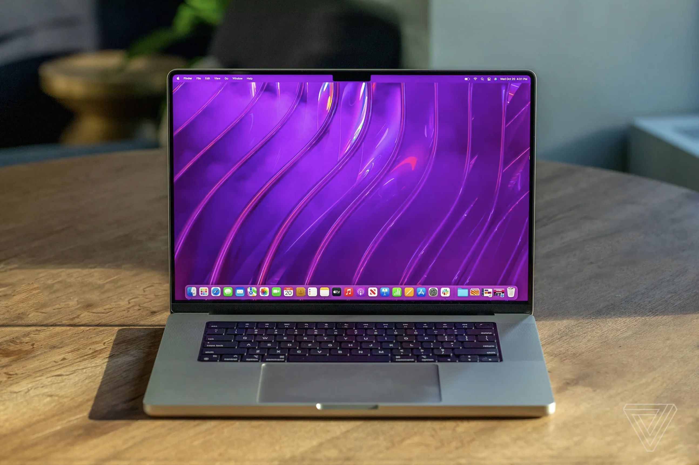
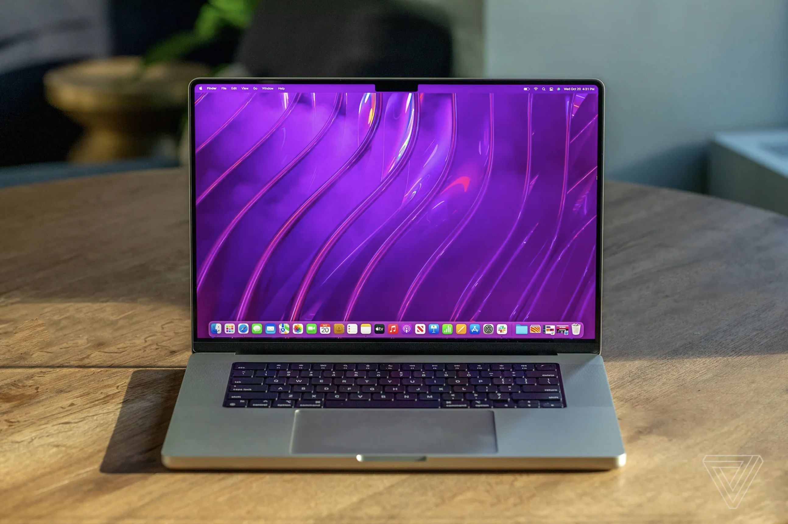

COMPUTER
 

A computer is an electronic device that manipulates information, store, retrieve, and process data. It can perform processes, calculations and operations based on instructions provided by a software or hardware program. Modern computers are used for a variety of purposes ranging from browsing the web, writing documents, editing videos, creating applications, playing video games, etc. They are designed to execute applications and provide a variety of solutions by combining hardware and software components.
Desktop Computer

A desktop computer is a computer that fits under/ on top of a desk. It utilizes peripheral devices for interaction, such as keyboard and mouse for input, display devices like monitor, projector. Desktop computers can have a horizontal or vertical (tower) form factor, or some desktop computers are combined with a monitor which makes it an All-in-one computer. Unlike a laptop, desktop computers are made to stay at one location.
Laptop
 


A laptop is a personal computer that can be easily moved in a variety of locations. It is designed to have all the functionality of a desktop computer but is portable enough to bring with you anywhere you go. Laptops feature an all-in-one design, with a built-in monitor, keyboard, touchpad, and speakers. This makes the computer fully functional without any additional peripherals connected. But you'll still have the option to connect to a regular keyboard, mouse, monitor, and other peripherals.
Why are Computers amazing?
Computers make our lives easier on a daily basis. It has changed the way of life. People use a computer because it can handle multitasking, solve complex calculations, and even simulate reality. We can consider computers as amazing technology because of their immense capabilities, usefulness, and all around efficiency. It makes it possible to receive, supply, and process large volumes of data at very high speeds. Computers even started to replace some workforce jobs. It eases human effort, which makes our work easier and more efficient. These technologies can also be used as a great educational tool. Students can have access to all sorts of information through the internet. Not just students, computers are used in every field of life such as medical, business, industry, airline and weather forecasting, etc.